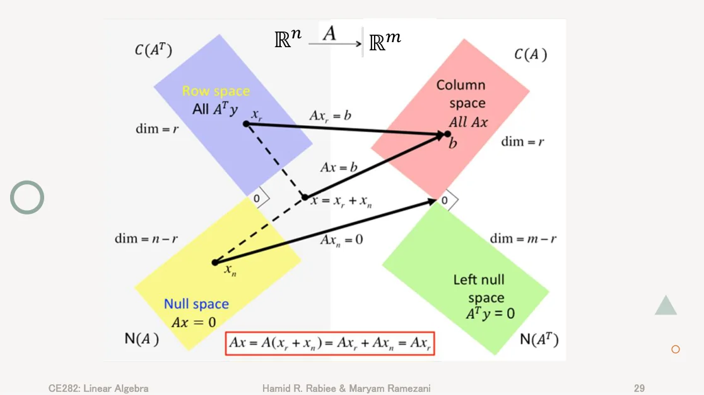

بخش ۵: Four Fundamental Subspaces — چهار زیرفضای بنیادی
اسلایدهای ۲۴ و ۲۵
فرض کن ماتریس \(A\) دارای \(m\) سطر، \(n\) ستون و رتبهٔ \(r\) باشد:
\[ A\in\mathbb R^{m\times n} \]
چهار زیرفضای مهم داریم:
| فضا | تعریف | بعد |
|---|---|---|
| Column Space | \(C(A)\) | \(r\) |
| Row Space | \(C(A^T)\) | \(r\) |
| Null Space | \(N(A)\) | \(n-r\) |
| Left Null Space | \(N(A^T)\) | \(m-r\) |
۱. رابطههای اصلی تعامد

\[ \boxed{C(A^T)^\perp=N(A)} \]
\[ \boxed{C(A)^\perp=N(A^T)} \]
پس دو تجزیهٔ مهم داریم:
\[ \boxed{\mathbb R^n=C(A^T)\oplus N(A)} \]
\[ \boxed{\mathbb R^m=C(A)\oplus N(A^T)} \]
این همان مطلب اصلی شکل اسلاید ۲۵ است.
۲. چرا فضای سطری بر فضای پوچ عمود است؟
اگر:
\[ x\in N(A) \]
آنگاه:
\[ Ax=0 \]
هر بردار فضای سطری را میتوان به شکل \(A^Ty\) نوشت.
ضرب داخلی:
\[ x^T(A^Ty)=(Ax)^Ty=0 \]
پس:
\[ N(A)\perp C(A^T) \]
از برابری ابعاد نیز نتیجه میشود که این دو دقیقاً متمم متعامد یکدیگرند.
مثال اضافهٔ ۱: پیدا کردن چهار زیرفضا
\[ A= \begin{bmatrix} 1&1&0\\\ 0&0&1 \end{bmatrix} \]
رتبهٔ ماتریس ۲ است.
فضای سطری:
\[ C(A^T)=\operatorname{span} \{(1,1,0),(0,0,1)\} \]
فضای پوچ:
از \(Ax=0\):
\[ x_1+x_2=0,\qquad x_3=0 \]
پس:
\[ N(A)=\operatorname{span}\{(1,-1,0)\} \]
فضای ستونی:
چون دو ستون مستقل داریم:
\[ C(A)=\mathbb R^2 \]
فضای پوچ چپ:
\[ N(A^T)=\{0\} \]
ابعاد:
\[ 2+1=3=n \]
\[ 2+0=2=m \]
همهچیز با قضایا سازگار است.
مثال اضافهٔ ۲: چرا فضای پوچ روی خروجی اثر ندارد؟
ماتریس:
\[ A=\begin{bmatrix}1&1\end{bmatrix} \]
و بردار:
\[ x=\begin{bmatrix}3\\\1\end{bmatrix} \]
داریم:
\[ Ax=4 \]
حالا \(x\) را به دو مؤلفه تجزیه میکنیم:
\[ x_r=\begin{bmatrix}2\\\2\end{bmatrix} ,\qquad x_n=\begin{bmatrix}1\\\\-1\end{bmatrix} \]
پس:
\[ x=x_r+x_n \]
و:
\[ Ax_n=1-1=0 \]
بنابراین:
\[ Ax=Ax_r+Ax_n=4+0=4 \]
این نکتهٔ مهمی است: بردارهای فضای پوچ چیزی به خروجی اضافه نمیکنند.